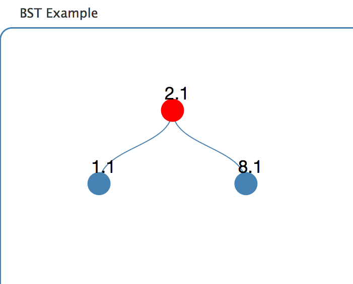

Exploring USGS Earthquake Data Using Binary Search Trees
Kalpathi Subramanian, Dept of Computer Science, The University of North Carolina at Charlotte, krs@uncc.edu
Introduction
The US Geological Survey (USGS) releases
data on all
earthquakes that occur around the world. These can be viewed directly via
maps or as
Tweets . For the past few
years, our group has been working on developing an infrastructure called
BRIDGES, a part of which provides
easy to use interfaces to interesting and topical datasets for routine use
in freshman/sophomore level computer science courses. In addition, all the basic data
structures supported in BRIDGES can be visualized with the data that they store in
their structures. Examples of visualizations used in data structures and
algorithms courses can be see on the BRIDGES site. Thus, the twin goals of
BRIDGES system is to make it easier
for sophomore level students to import interesting real-world datasets and view
the data and the data structurs they have themselves constructed.
An example BRIDGES Program that creates and visualizes a Binary Search Tree
The example below illustrates a simple BRIDGES program to build a 3 node binary search
tree. In a full application, a binary search tree ADT will be used to provide the basic
methods to build and manipulate the tree. To run this program, a BRIDGES Jar file
(available at the BRIDGES site) needs to be loaded (the C++ version requires the
libCURL library and a set of BRIDGES include files).
The visualization will be sent to a weblink output by the program on the console.
See the full set of examples at Bridges Tutorials.
import bridges.connect.Bridges;
import bridges.base.BSTElement;
public class HelloWorld {
public static void main(String[] args) throws Exception {
//create the Bridges object
Bridges<Float, String> bridges = new Bridges<>(81, BRIDGES_API_KEY", "BRIDGES_USER_ID");
bridges.setTitle("BST Example");
//create elements
BSTElement<Integer,String> root = new BSTElement<>(2.1", "Root");
BSTElement<Integer,String> right = new BSTElement<>(8.1", "Right");
BSTElement<Integer,String> left = new BSTElement<>("1.1", "Left");
//link elements
root.setLeft(left);
root.setRight(right);
// color the root node
root.getVisualizer().setColor("red");
//pass first element of data structure
bridges.setDataStructure(root);
//visualize data structure
bridges.visualize();
}

Project Description
The project will explore the use of binary search trees and their underlying
algorithms using the USGS earthquake dataset and the BRIDGES infrastructure.
We have set up an asynchronous process to collect and parse the USGS earthquake
tweets; the data gets stored in a MongoDB and is transparent to the user.
Thus,
each time a driver is run to extract the quake data, by default the latest set of
quakes is extracted, enabling a user to see the most recent quakes! To
access the data, the user issues the following calls from his driver program (after
creating the BRIDGES Object:
USGSaccount acct = new USGSaccount( "earthquake" );
List eqlist = Bridges.getAssociations(acct, maxElements);
These calls retrieve maxElement(user specified) earthquake records from the DB
and are returned in a Java list of objects of type EarthquakeUSGS(which is part
of BRIDGES). At this point the user is free to use the data as part of his project.
One additional call is required to store the object as part of the BSTElement
(which is subclassed from Element), for instance,
root.setValue(eqlist[k]);
Example Project Tasks
I have used this data twice so far for students in data structures and
algorithms courses. The project was broken up into 3 parts:
- Implement the binary search tree ADT using the text book's implementation
(carried very little credit since it was already in the text book).
- Make the needed changes to use the BSTElement object for the nodes
and to visualize a set number of earthquakes (using the driver described above).
Earthquake magnitude was used as the search key for the tree. Label the
nodes to illustrate(mouseover operation illustrates the label) the
location, date, time of the quake.
See the earthquake example posted on
the BRIDGES website
- The last part of the project included the following tasks:
- Find and highlight the largest earthquake
- Find and highlight the smallest earthquake
- Find and highlight the quakes within a user specified range.
- Find and highlight the quakes that satisfy a date (by month, by year, etc)
- Find and highlight quakes by a specified location( for instance, Alaska).
Intended Students
The project will clearly be appropriate for a course on data structures, but the above
tasks can be simplified for lower level students (CS1, CS2) by providing an
implementation of the ADT and critical functions and engage the students with the
visualization(CS0/CS1 - might just run the application with an implemented
interface to just look at the current quakes, while focusing on performance/efficiency
issues and the motivation behind search trees. More advanced students can use the
AVL Tree Element object (subclassed from BSTElement) to build balanced binary search
trees, perform tree rotations(this was the project in our algorithms course), etc.
The visualizations help engage students and also serve as a more attractive way to
check their work. Grading is also interactive, promoting more direct interaction with
students.
Provided Materials/Documentation
- The BRIDGES website has complete
documentation (C++ and Java implementations are supported); this is an
ongoing project so full support to instructors and students are provided
by the BRIDGES development team for issues relating to BRIDGES setup.
- Documentation on getting started with BRIDGES with various IDEs are provided(not
a complete list yet).
- All needed software(both C++ and Java versions) are on the BRIDGES website
and regularly monitored.
- BRIDGES is currently hosted by an external server(Heroku and soon on Amazon), thus
reliability should be high in terms of server performance.
Meta-Data
| Summary |
Project enable working with a real-world dataset - earthquake data from USGS
and applying it to binary search trees, generating visualizations of the tree
and the data of the latest quakes that occured minutes ago.
|
| Topics |
binary search trees or AVL trees, algorithms on binary search trees,
generic programming
|
| Audience |
Appropriate for CS2 or Data Structures courses, but also perhaps CS1 (with
some components implemented and provided to students).
|
| Difficulty |
Intermediate to advanced assignment, 1-2 weeks, depending on the parts of
the assignment assigned by the instructor.
|
| Strengths |
Easily work easily with a real-world scientific data set, without getting
bogged down in parsing or fighting I/O; rather focus on core algorithms on
search trees, and quickly produce visualizations of the data structure in
a way that is easily shared(via weblinks) on any device; BRIDGES well
documented with live examples.
|
| Weaknesses |
Some effort to setup BRIDGES - creating account, integrating a Jar file into
IDE (sample program is provided to make this easier); if using C++ version,
then the user must build the Curl library for the
visualization component. Fully supported by the BRIDGES development team
to ease the learning curve
|
| Dependencies |
Need to be reasonably competent in Generic Java or C++(Bridges uses
templates); however, this is inline with most textbooks on data structures.
|
| Variants |
An advanced version using AVL trees can be used for courses on Algorithms,
by maintaining a balanced search tree, exploring tree rotations, extracting
subsets of the tree, tree transformations.
|